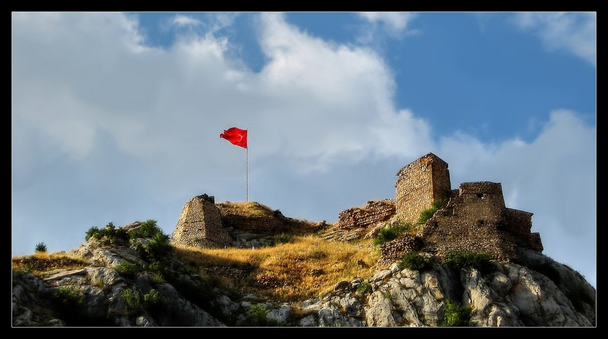

Tokat Kalesi, Tokat’ın tarihi hakkında ziyaret edilebilecek en önemli duraklardan biridir ve şehrin sembol yapılarının başında gelmektedir. Yüksek bir tepede inşa edilen kale hakkında kesin bilgi bulunmuyor. Tahminlere göre 5. veya 6. yüzyılda yaptırılmış. Dikkatli incelendiğinde doğal kaya kütlesinin oyularak kalenin iskeletinin ortaya çıktığı anlaşılıyor. Surlar ve odalar günümüzde de ilk günkü sağlamlığını koruyor.
Kalede 500 yıl boyunca Bizans egemenliği devam etmiş ve 1074 senesinde Danişmend Melik Gazi tarafından fethedilerek Türk hakimiyetine girmiştir. Sonrasında ise Selçuklular, İlhanlılar ve Osmanlılar da kalenin hakimi olmuştur. Kale Osmanlı zamanında bir zindan olarak kullanılmış ve Bizans İmparatoru A. Diogenis gibi tarihte önemli yere sahip olan birçok kişi bu kalede esir edilmiştir. Güneydoğu kısmında kaya mezarlarının da olduğu belirtilen kalenin iç kısımlarında gizli tünellerin de kazıldığı bilinmektedir. Kale, şehre hakim bir konumda bulunmaktadır.
Kızıliniş Geçidi ve Gıjgıj adı verilen tepeyi yukarından gören ve kontrol eden bu nokta kale savunması açısından oldukça güvenli ve saldırı açısından da oldukça avantajlıdır. Günümüzde ise Tokat'ın merkezinde kalmaktadır ve merkez ilçe kale etrafında kurulmuştur. Kale, şehrin en yüksek noktasıdır.
Kalenin günümüze dek ulaşan kısımları Orta Çağ mimarisini andırmaktadır. Sur duvarları iç ve dış surlar olmak üzere kesme taş ve molozlar kullanılarak kademeli olarak kaya kütlelerine oturtulmuştur. Beşgen plânla oluşturulan yapı sekiz burç ile güçlendirilmiş, kuzeydeki doğal kayalıkların kapı olarak kullanılmasına izin verilecek şekilde dizayn edilmiştir. Kalenin en çok hasar gören kuzey ve güney yönlerindeki duvarlar depremler ve bakımsızlıktan yıkılmış, bugüne yalnızca ana kaya üzerindeki yapılar kalmıştır. Ayrıca yapının doğal yollarla meydana gelen kayalık surları yine doğal tahribatlara karşı oldukça dayanıklıdır.
Kaleye giriş kuzey yönündeki bir oyuktan yapılmaktadır. Mazgalları, kuleleri, burçları, sarnıcı, cephaneliği ve kulelerinin bir bölümünün günümüze ulaştığı kalenin içerisinde birçok oda bulunmaktadır. Bu yapılardan geriye kalan ise temel kalıntıları ile tonozlardır.
Evliya Çelebi 1656 yılında kaleyi ziyaret etmiş ve deneyimlerini Seyahatnâme adlı eserine not düşmüştür. Kalenin o zamanki yapısı hakkında bilgi verilen eserde kaleden şu şekilde bahsedilmektedir:
Kale yüksek bir tepe üzerinde, kesme taş ile yapılmış olup o kadar büyük değildir. Etrafı burçlar ve kuleler ile süslenmiş olup, etrafında hendek yoktur. Korkusuz bir surdur ki Samanyolu gibi göğe baş uzatmıştır. Dört tarafı çok sarp olduğundan asla hendek olacak yeri yoktur. Bütün etrafı şahin, kartal ve zağanos yuvaları, çeşitli rengârenk kayalardır. Batıya bakan bir kapısı vardır. Kalenin içinde dizdar evi, kethüda, imam, müezzin ve kale mehterhaneleri, cephane odaları, zahire ambarları, su sarnıçları, Ceylan Yolu adlı suyolları vardır ki tam 362 basamak taş merdivenle nehre inilir. Batı tarafındaki Ayar Kayası bu kaleye havaledir. Yıldırım Han Camii var diğerlerden bir şey yok. Göğe kadar yükselmiş bir kale olmakla değme adam bir saatte çıkamadığından gece gündüz kapısı kapalıdır. Bekçileri daima bekleyip, silahla hazır dururlar. Çünkü aşağı şehir ahalisinin bütün kıymetli malları kalede muhafaza olunur. Tokat’ın bütün suçlu ve katilleri burada mahpustur ki Kudüs-ü Şerif zindanına ve Acemlerin Kahkaha Kalesi'ne benzer.
Tüm Hakları Saklıdır ©| 2021
Designed by Ayşegül GENÇEL ©| B201210053